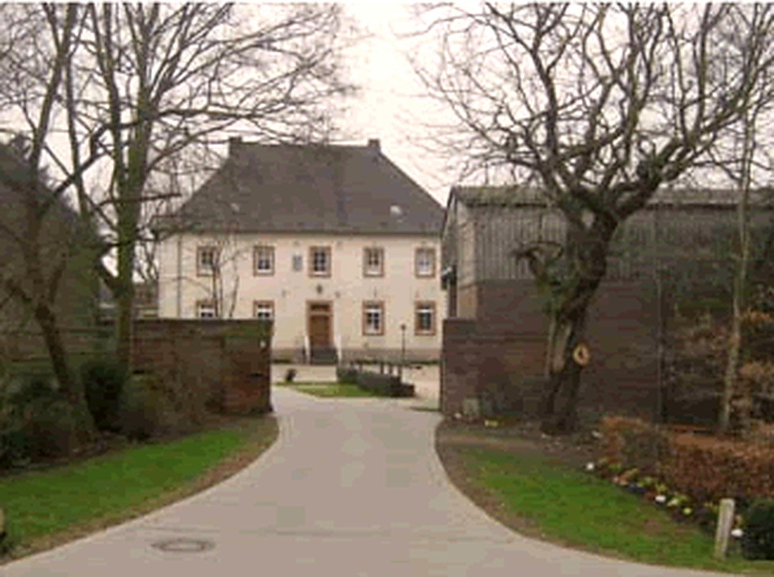

Die Geschichte des Amelner Getreidebrands ist keine Marketinggeschichte. Sie ist die Geschichte eines Dorfes, das aus seinem eigenen Korn brannte — und eines Mannes, der nicht hinnehmen wollte, dass damit Schluss sein sollte.
Warum Bauern brannten
Getreide ist verderblich, Branntwein ist es nicht. Über Jahrhunderte war das Brennen für landwirtschaftliche Betriebe deshalb weniger Luxus als Vernunft: Was sich nicht lagern oder verkaufen ließ, wurde haltbar gemacht. Aus der Schlempe, dem Rückstand des Brennens, wurde das Vieh gefüttert. Nichts blieb übrig.
Im Rheinland schlossen sich Landwirte dafür vielerorts zu Genossenschaften zusammen. Eine Brennerei allein zu betreiben lohnte für den einzelnen Hof selten — gemeinsam schon. So entstanden Betriebe, die einem Dorf gehörten und nicht einem Unternehmen.
1901 — Die Gründung
In genau dieser Tradition steht die Amelner Getreidebrennerei vereinigter Landwirte, gegründet im Jahr 1901. Heimische Bauern taten sich zusammen und brannten, was auf ihren eigenen Feldern rund um Ameln wuchs.
Der Name sagt schon alles über die Eigentumsverhältnisse: vereinigter Landwirte. Kein Investor, keine Marke, die man sich ausgedacht hatte. Ein Zusammenschluss von Leuten, die dasselbe Korn anbauten und daraus dasselbe machen wollten.
Die Genossenschaftsjahre
Über Generationen prägte die Brennerei das Leben im Dorf. Ihr Brand stand auf den Tischen der Region: nach dem Essen, auf dem Fest, zu jedem Anlass, der einen guten Schluck verdiente. Ein Getränk, das man nicht kaufte, weil es beworben wurde, sondern weil es von nebenan kam.
2003 — Die Stilllegung
Nach mehr als hundert Jahren wurde der Betrieb im Jahr 2003 stillgelegt. Was blieb, waren die letzten Vorräte des alten Amelner Brandes — und die Erinnerung an einen Geschmack, den es so nirgendwo sonst gab.
Die Lücke
Flasche um Flasche gingen die Bestände zur Neige. Ein Rezept, das über hundert Jahre überdauert hatte, drohte mit der letzten geleerten Flasche zu verschwinden — nicht durch eine Entscheidung, sondern einfach dadurch, dass niemand es weiterführte.
2010 — Die Rückkehr
Als die letzten Flaschen aufgebraucht waren, fasste Andreas Dering einen Entschluss: Diese Tradition darf nicht verloren gehen. Seit 2010 sind der Amelner Treffer und der Amelner Tropfen wieder erhältlich — gebrannt nach der unveränderten Originalrezeptur, am selben Ort, mit demselben Anspruch.
Verändert wurde nichts. Nicht die Kräutermischung, nicht die Grundlage, nicht der Charakter. Was 1901 richtig war, ist es geblieben.
Der Grundsatz
Ein Rezept, das ein Jahrhundert überdauert hat, verändert man nicht. Man bewahrt es.

Zum Signet
Die Weizengarbe im Kelch ist das überlieferte Zeichen des Hauses. Sie findet sich bis heute auf dem Etikett jeder Flasche wieder.
»Als die letzten Flaschen leer waren, war klar: Entweder es macht jemand weiter — oder es ist vorbei.«Zur Wiederbelebung 2010